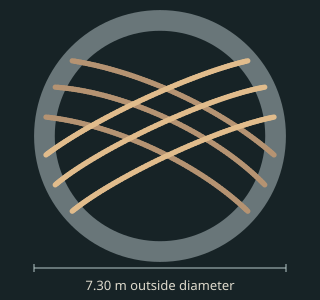
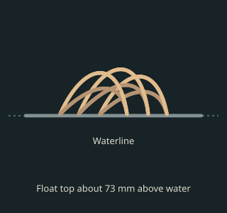
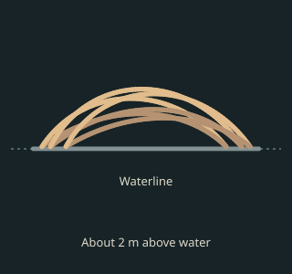

Harbour Square Park Basin / Toronto
Six Rings on Mother
Six threads woven over open water. Each ring keeps its own height and its own lean, and none touches another, yet together they read as one form.
The 3D view needs WebGL. The timeline and choices still work.
Open the illustrated simulatorBasin timeline
About the work
WATERLINE is six threads woven over open water. Each ring keeps its own height and its own lean, and none touches another, yet together they read as one form. That is the work's picture of Toronto: many peoples, cultures and landscapes making a whole that none could make alone. No ring stands for any one group. Any thread could be anyone's.
The lake completes each ring with its reflection, and on calm water the weave opens into a portal: a place to look through, not to pass through, toward a future we share.
After dark each ring carries one value and one tone. The work rewards balance over any one value winning. All six lit together is rare, and means the choices were in harmony that hour.
Installation schematics
Revision 4 concept dimensions. The drawings show the physical ribs and float.



- Floating ring
- 7.30 m across the outer edge. The float is 600 mm wide and 140 mm thick. A water-grey polyethylene skin covers closed-cell foam around an aluminium frame.
- Six woven ribs
- 152 mm diameter satin, honey-toned anodised aluminium tube. Each rib spans about 6.5 to 6.7 m between its feet. The low ribs pass under the tall ones.
- Light strips
- Two strips follow each rib, one on top and one underneath facing the lake. A short band travels along each active rib.
How WATERLINE would be built
The first test would be a small model on water. From shore height, how much of the reflected arch can you see past the float? A two-rib lighting mockup would then show how little light it takes for the underside strip to register on the lake.
Power for a night on the water
- About 145 Wh per day
- Estimated energy for the artwork. The model assumes two active ribs on average over a ten-hour night and includes the controller, modem and a 20% allowance.
- 90 to 120 W of solar panels
- Panels would lie flat along the far side of the float. The sizing estimate assumes the equivalent of 2.5 hours of full sun in October and 65% system efficiency.
- 450 Wh battery
- Proposed storage for the night score. The mockup would measure strip and controller demand at the chosen brightness before the battery and panels are sized.
A short band lights up on each active rib. The other ribs switch off to save power. Once an hour, the proposed onboard controller would fetch the tally and play the score locally. If the link drops, it would play a stored sequence. The navigation light would have its own supply and controls.
Fabricate in sections
Four float quarters and twelve half ribs would travel by road. Inside each float quarter, aluminium rungs join an inner and outer frame. The rib feet bolt into sockets on that frame. Each pair of rolled half ribs meets over an internal sleeve at the crown, leaving a smooth surface for the light strips. Stainless fasteners would be isolated from the aluminium.
Assemble and moor
The first weight estimate is about 0.8 tonnes afloat. The sections would be joined at the water’s edge and the ring towed into position. Three lines to lakebed anchors would hold the eye facing shore while allowing for changes in water level. A marine engineer would check the float and frame against wave loads and size the moorings for the actual lakebed before fabrication.
Inspect and recover
The proposed crew would visit by boat every two weeks and after storms to check the rib feet, fasteners, lines and lights, and lift out litter caught inside the ring. In early October the crew would tow the work back to shore and unbolt it for transport. The mechanical joints allow the arches to be used again on land.
Work with an AI collaborator
Start with the public WATERLINE repository on GitHub.
Give your agent the repository and one question, such as “Which assumptions most affect the battery size?” If it can’t open GitHub, download the repository ZIP, extract it, and open that folder in your agent’s workspace. When reviewing a proposed change, include its pull request link so your agent reads the same revision.
Share the answer with the team along with its source references and any proposed test. For edits, follow the repository’s contribution guide.